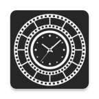

Нативное Android-приложение для сохранения каждого дня жизни в лаконичных видеороликах и автоматической склейки в эмоциональный годовой фильм. Собственная гибкая камера (16:9), календарь с живыми превью, покадровый редактор и аппаратный монтаж без водяных знаков и потери битрейта.
Проблема: Галереи смартфонов переполнены гигабайтами случайных фото и видео, которые никто никогда не пересматривает. Мировые аналоги либо требуют дорогую ежемесячную подписку, либо сжимают ролики до потери резкости и накладывают водяные знаки.
Решение: Автономное приложение без подписочных ловушек, спроектированное на Jetpack Compose с кастомной камерой CameraX, удобным календарем с превью каждого дня и сверхбыстрым аппаратным склеиванием роликов в готовый фильм.
Формат кадра 16:9, переключение фронтальной и основной камеры, адаптивный оптический и цифровой зум, вспышка, таймеры задержки (3, 5, 10 секунд), отзеркаливание селфи-видео.
Поддержка популярных форматов хроники: 1 секунда, 3 секунды, 5 секунд, 10 секунд, 30 секунд, 60 секунд и адаптивный режим Any с индивидуальной настройкой длины фрагмента под каждый день.
Мгновенный переход по годам и месяцам, живые кадры-превью для каждого отснятого дня, индикация пропущенных дней и статуса заполненности проекта.
Выбор начальной точки с помощью точного таймлайн-слайдера, обрезка видеороликов, возможность импортировать и заменить видео из галереи телефона.
Монтаж всех сохраненных дней в единый кинематографичный MP4-ролик с аппаратным кодированием через MediaCodec без потери битрейта, артефактов пережатия и чужих водяных знаков.
Быстрая проверка лицензий SecondsYear Premium, получение обновлений и динамических уведомлений студии через защищенный REST API.
Архитектура Clean Architecture + MVVM. Реактивные потоки состояния StateFlow/SharedFlow, изоляция бизнес-логики в Use Cases, локальное кэширование метаданных в Room, аппаратное ускорение видеорендеринга через MediaCodec.